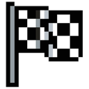
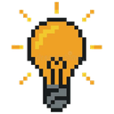

LAP CUSTOM
Diseño interior automotriz de alta gama · dos campañas para la misma marca
Campaña de ventas automotriz premium · diseño interior automotriz de alta gama
Cada S/1 invertido generó S/89,32 en ingresos.
El problema
El servicio tenía un ticket de USD 1.190 a 1.590, pero llegaban consultas de personas que buscaban tapizado económico. Eso saturaba al asesor comercial con contactos sin intención real de compra.

El objetivo
Atraer solo a prospectos con capacidad de inversión y reposicionar el servicio como una experiencia premium, no como un producto de precio.

Estrategia
- Posicionamiento desde el copy y la creatividad: "No es tapizado. Es diseño interior."
- Segmentación por distritos de nivel socioeconómico A/B en Lima.
- Campañas con objetivo de conversación a WhatsApp.
- CRM con automatización para ordenar el pipeline y reducir tiempos de respuesta.
Resultados de la campaña de ventas · Meta Ads · 30 dic 2025 – 10 feb 2026
Resumen del rendimiento
La campaña en el administrador
En servicios premium con venta consultiva, una conversión de 2 a 3% sobre tráfico filtrado es un resultado sólido. El éxito no fue el CPL bajo: fue la rentabilidad final.
Reducir el ruido
El mayor desafío no era generar volumen, sino reducir el ruido. El copy trabajó como filtro activo: mensajes que elevaban la exclusividad del servicio y desalentaban a quienes buscaban precios bajos.
- Copy estratégico con frases de exclusión implícita.
- Ajuste continuo de la segmentación hacia perfiles de mayor poder adquisitivo.
- Revisión diaria de métricas para detectar patrones en la calidad de las conversaciones.
- Automatización en CRM: de 734 conversaciones, 502 se clasificaron como interés real.
El filtro no solo ocurrió en el anuncio. Ocurrió en todo el proceso.